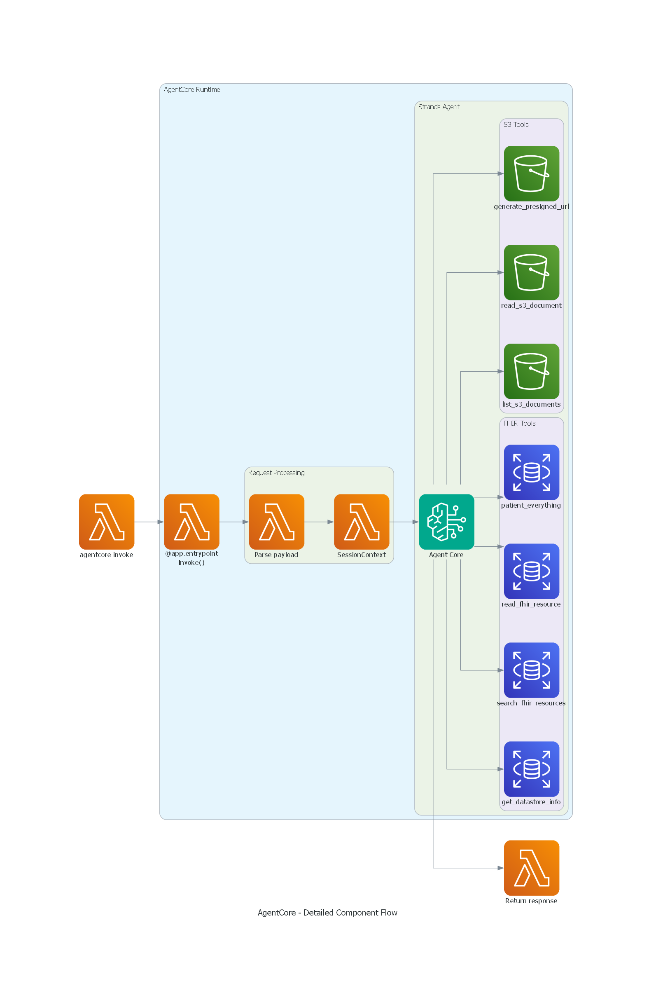
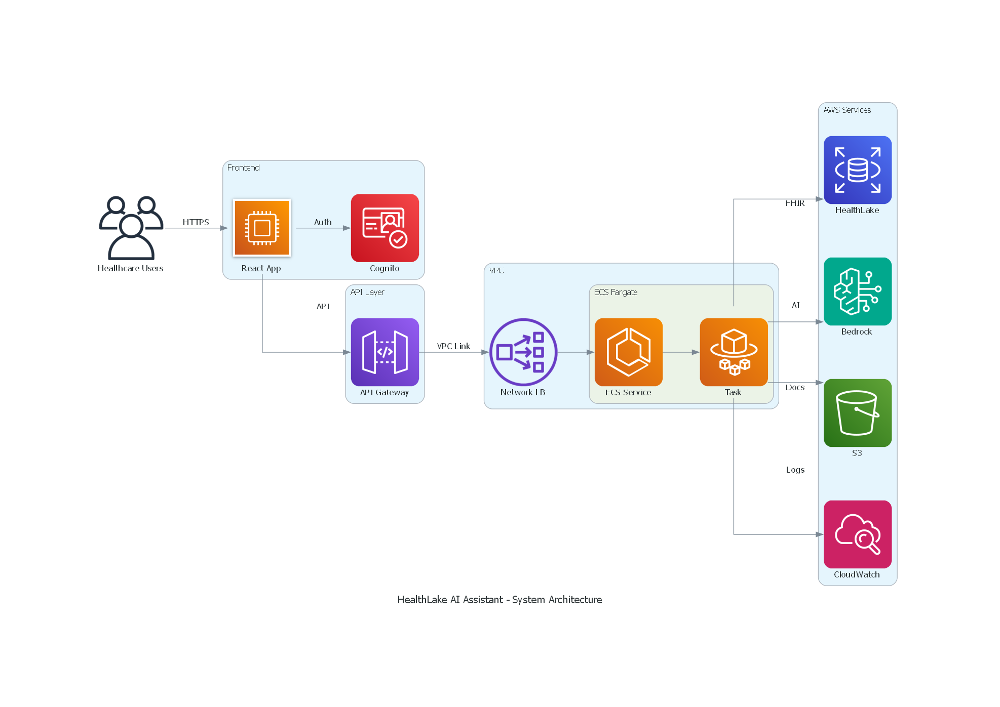

📋 Overview
The HealthLake AI Assistant is an intelligent healthcare agent built on AWS Bedrock AgentCore, providing natural language access to FHIR R4 clinical data and healthcare documents stored in AWS HealthLake.
Key Features
- Natural Language Queries: Query FHIR resources (Patients, Conditions, Observations, Medications) without technical expertise
- Complete Patient Records: Retrieve comprehensive patient data with
$patient-everythingoperation - Clinical Document Access: Access S3-stored documents with presigned URL generation
- Session Memory: 30-day conversation retention for context-aware interactions
- Role-Based Access: Patient, doctor, nurse, and admin roles with appropriate permissions
- Real-Time Streaming: Live responses with tool execution visibility
Example User Queries
- "Find all patients diagnosed with diabetes in the last 6 months"
- "Show me the complete medical record for patient John Doe"
- "What are the latest treatment guidelines for hypertension?"
- "List all medications prescribed to patients with chronic kidney disease"
Project Structure
healthlake-agent/
├── agent.py # Strands agent with 7 tools
├── agent_agentcore.py # AgentCore entrypoint wrapper
├── config.py # Configuration management
├── requirements.txt # Python dependencies
├── Dockerfile # AgentCore container image
├── .bedrock_agentcore.yaml # AgentCore configuration
│
├── models/
│ ├── session.py # SessionContext and UserRole
│ ├── agent_response.py # Response models
│ └── interaction_log.py # Logging models
│
├── utils/
│ ├── auth_helpers.py # Authorization validation
│ ├── retry_handler.py # Retry logic for AWS calls
│ └── fhir_code_translator.py # FHIR code translation
│
├── prompts/
│ └── healthcare_assistant_prompt.py # System prompt
│
├── scripts/
│ ├── deploy_agentcore.ps1 # Deployment script
│ ├── configure_agent.ps1 # Configuration script
│ ├── add_healthlake_permissions.ps1 # IAM permissions
│ └── test_agentcore_agent.ps1 # Testing script
│
├── docs/
│ ├── ARCHITECTURE.md # Architecture documentation
│ ├── DEPLOYMENT.md # Deployment guide
│ └── QUICKSTART.md # Quick reference
│
└── examples/
├── chatbot_agentcore.html # Web chatbot interface
└── api.py # FastAPI integration example🚀 Quick Start
Prerequisites
- AWS CLI configured with appropriate credentials
- AWS Bedrock AgentCore CLI installed:
pip install bedrock-agentcore - Docker installed and running
- Python 3.11 or higher
- AWS HealthLake datastore with FHIR R4 data
Deploy to AWS (3 Commands)
Step 1: Configure Environment
Create a .env file:
# AWS Configuration
AWS_PROFILE=your-aws-profile
AWS_REGION=us-west-2
# HealthLake Configuration
HEALTHLAKE_DATASTORE_ID=your-datastore-id
# Bedrock Configuration
BEDROCK_MODEL_ID=anthropic.claude-opus-4-5-20250514
BEDROCK_TEMPERATURE=0.7
BEDROCK_MAX_TOKENS=4096
# S3 Configuration (optional)
S3_BUCKET_NAME=your-s3-bucket-nameStep 2: Install Dependencies
pip install -r requirements.txtStep 3: Configure AgentCore
agentcore configure --entrypoint agent_agentcore.py --name healthlake_agentStep 4: Deploy to AWS
agentcore deploy --agent healthlake_agentStep 5: Add IAM Permissions
.\add_healthlake_permissions.ps1Step 6: Test the Agent
agentcore invoke '{"prompt": "What is the HealthLake datastore information?"}' --agent healthlake_agentCommon Commands
| Command | Description |
|---|---|
agentcore status --agent healthlake_agent --verbose |
Check agent status and configuration |
agentcore deploy --agent healthlake_agent |
Update deployment after code changes |
agentcore destroy --agent healthlake_agent |
Remove agent from AWS |
aws logs tail /aws/bedrock-agentcore/runtimes/... --follow |
View real-time logs |
🏗️ Architecture
Solution Architecture
The solution uses an agentic workflow pattern with AWS Bedrock AgentCore, enabling the AI agent to automatically orchestrate interactions between foundation models, FHIR data sources, document repositories, and user conversations.
Architecture Layers
1. Client Layer
Multiple interfaces for agent interaction:
- AgentCore CLI: Direct command-line invocation for testing and automation
- Web Chatbot: Browser-based interface with streaming responses
- FastAPI Backend: REST API for application integration
2. AgentCore Runtime Layer
Serverless execution environment managed by AWS:
- Lambda Runtime: ARM64-based container execution with automatic scaling
- Memory Service: Short-term memory (STM) for 30-day session retention
- Container Image: Stored in Amazon ECR with agent code and dependencies
- IAM Execution Role: Fine-grained permissions for HealthLake, S3, and Bedrock
3. Data & AI Layer
Backend services providing clinical data and AI capabilities:
- AWS HealthLake: FHIR R4 datastore with clinical records
- Amazon Bedrock: Claude Opus 4.5 foundation model for natural language understanding
- Amazon S3: Clinical guidelines, protocols, and medical documents
- CloudWatch: Comprehensive logging and metrics for observability
Tool Catalog
The agent has 7 specialized tools organized by function:
FHIR Data Access Tools
| Tool | Purpose | Example Use Case |
|---|---|---|
get_datastore_info |
Retrieve HealthLake datastore metadata | "What FHIR version is the datastore?" |
search_fhir_resources |
Search for FHIR resources with filters | "Find all patients with diabetes" |
read_fhir_resource |
Read complete resource by ID | "Show me details for Patient/123" |
patient_everything |
Get all resources for a patient | "Get complete record for patient John Doe" |
Document Access Tools
| Tool | Purpose | Example Use Case |
|---|---|---|
list_s3_documents |
List documents in S3 bucket | "What clinical guidelines are available?" |
read_s3_document |
Read document content (up to 50MB) | "Show me the diabetes treatment protocol" |
generate_presigned_url |
Create secure download link | "Give me a link to download the PDF" |
Request Flow
1. User Query → AgentCore Entrypoint
├─ Parse payload (prompt, session_id, context)
├─ Validate user role and permissions
└─ Create SessionContext
2. AgentCore Entrypoint → Strands Agent
├─ Initialize Claude Opus 4.5 model
├─ Load system prompt with healthcare context
└─ Inject session state
3. Strands Agent → Tool Selection
├─ Analyze user intent
├─ Select appropriate tool(s)
└─ Generate tool parameters
4. Tool Execution → AWS Services
├─ FHIR Tools → HealthLake API (signed requests)
├─ S3 Tools → S3 API (with IAM permissions)
└─ Return structured results
5. Response Generation → User
├─ Synthesize tool results
├─ Generate natural language response
└─ Stream or return complete response🚢 Deployment Guide
Deployment Configuration
| Property | Value |
|---|---|
| Agent Name | healthlake_agent |
| Deployment Type | Container |
| Platform | linux/arm64 |
| Runtime | Serverless Lambda |
| Memory Mode | STM_ONLY (30 days) |
Step-by-Step Deployment
Step 1: Configure Environment
Create .env file with your AWS configuration:
AWS_PROFILE=your-aws-profile
AWS_REGION=us-west-2
HEALTHLAKE_DATASTORE_ID=your-datastore-id
BEDROCK_MODEL_ID=anthropic.claude-opus-4-5-20250514
S3_BUCKET_NAME=your-s3-bucket-nameStep 2: Configure AgentCore
agentcore configure --entrypoint agent_agentcore.py --name healthlake_agentThis creates .bedrock_agentcore.yaml with deployment settings.
Step 3: Deploy to AWS
agentcore deploy --agent healthlake_agent- Builds Docker image with ARM64 architecture
- Pushes image to ECR repository
- Creates AgentCore runtime (Lambda)
- Creates memory resource (30-day STM)
- Sets up CloudWatch logging
- Configures IAM roles
Step 4: Add IAM Permissions
The execution role needs HealthLake and S3 permissions. Use the provided script:
.\add_healthlake_permissions.ps1Or manually add this inline policy to the AgentCore execution role:
{
"Version": "2012-10-17",
"Statement": [
{
"Effect": "Allow",
"Action": [
"healthlake:DescribeFHIRDatastore",
"healthlake:ReadResource",
"healthlake:SearchWithGet",
"healthlake:SearchWithPost"
],
"Resource": "arn:aws:healthlake:REGION:ACCOUNT_ID:datastore/fhir/YOUR_DATASTORE_ID"
},
{
"Effect": "Allow",
"Action": ["s3:GetObject", "s3:ListBucket"],
"Resource": [
"arn:aws:s3:::YOUR_BUCKET_NAME",
"arn:aws:s3:::YOUR_BUCKET_NAME/*"
]
}
]
}Step 5: Test Deployment
# Basic test
agentcore invoke '{"prompt": "What is the HealthLake datastore information?"}' --agent healthlake_agent
# Test with context
agentcore invoke '{"prompt": "Search for patients", "context": {"user_id": "doctor-001", "user_role": "doctor"}}' --agent healthlake_agentStep 6: Monitor Logs
# Tail logs in real-time
aws logs tail /aws/bedrock-agentcore/runtimes/healthlake_agent-UNIQUE_ID-DEFAULT --follow --region REGION --profile YOUR_PROFILEUpdating the Agent
After making code changes:
agentcore deploy --agent healthlake_agentThis rebuilds and redeploys the container automatically.
Cleanup
# Destroy agent (keeps ECR repo)
agentcore destroy --agent healthlake_agent
# Destroy agent and ECR repo
agentcore destroy --agent healthlake_agent --delete-ecr-repo💻 Usage Examples
CLI Invocation
Basic Query
agentcore invoke '{"prompt": "What is the HealthLake datastore information?"}' --agent healthlake_agentWith Session Context
agentcore invoke '{"prompt": "Search for patients with diabetes", "context": {"user_id": "doctor-001", "user_role": "doctor"}}' --agent healthlake_agentWith Session ID for Conversation Continuity
agentcore invoke '{"prompt": "Tell me more about the first patient", "session_id": "session-123"}' --agent healthlake_agentPowerShell Usage
For PowerShell, use here-string syntax:
$json = @'
{"prompt": "Search for patients in the datastore and show me the first 3 results"}
'@
$json | agentcore invoke --agent healthlake_agent -Web Chatbot
Open examples/chatbot_agentcore.html in a browser for an interactive interface with:
- Real-time streaming responses
- Tool execution visibility
- Session management
- User role selection
Sample Queries
Patient Search
"Find all patients diagnosed with diabetes"
"Search for patients over 65 years old"
"Show me patients with hypertension"Patient Records
"Get complete medical record for patient John Doe"
"Show me all conditions for patient ID 123"
"What medications is patient Jane Smith taking?"Clinical Data
"List all lab results for patient 456"
"Show me recent vital signs for this patient"
"What procedures has patient 789 undergone?"Document Access
"What clinical guidelines are available?"
"Show me the diabetes treatment protocol"
"Give me a download link for the hypertension guideline"Performance Metrics
| Metric | Value | Notes |
|---|---|---|
| Cold Start | 2-5 seconds | First invocation after idle |
| Warm Start | <1 second | Subsequent invocations |
| Simple Query | 3-8 seconds | e.g., datastore info |
| Complex Query | 10-20 seconds | e.g., patient search with analysis |
| Memory Retention | 30 days | Automatic cleanup |
📊 Monitoring & Observability
CloudWatch Logs
All agent activity is logged to CloudWatch:
Log Group: /aws/bedrock-agentcore/runtimes/healthlake_agent-UNIQUE_ID-DEFAULT
Retention: 7 days (configurable)View Logs
# Tail logs in real-time
aws logs tail /aws/bedrock-agentcore/runtimes/healthlake_agent-UNIQUE_ID-DEFAULT --follow --region REGION --profile YOUR_PROFILE
# View recent logs
aws logs tail /aws/bedrock-agentcore/runtimes/healthlake_agent-UNIQUE_ID-DEFAULT --since 1h --region REGION --profile YOUR_PROFILEAgent Status
# Check agent status
agentcore status --agent healthlake_agent --verboseGenAI Observability Dashboard
Access the built-in dashboard in AWS Console:
https://console.aws.amazon.com/cloudwatch/home?region=REGION#gen-ai-observability/agent-coreDashboard Features
- Request/response metrics
- Latency tracking
- Error rates
- Token usage
- Cost analysis
Cost Analysis
Monthly Cost Estimate
| Component | Cost | Calculation |
|---|---|---|
| AgentCore Runtime | $0.20/1M requests | ~100K requests = $0.02 |
| Memory (STM) | $0.03/GB-month | ~1GB = $0.03 |
| CloudWatch Logs | $0.50/GB | ~5GB = $2.50 |
| ECR Storage | $0.10/GB-month | ~2GB = $0.20 |
| Bedrock (Claude Opus 4.5) | Variable | $5/M input tokens $25/M output tokens |
Example Usage Costs
Scenario: 1,000 queries/month
- Infrastructure: $3
- Bedrock (avg 500 tokens in, 1000 tokens out): $27.50
- Total: ~$30/month
Scenario: 10,000 queries/month
- Infrastructure: $5
- Bedrock (avg 500 tokens in, 1000 tokens out): $275
- Total: ~$280/month
🔒 Security
Authentication & Authorization
IAM-based Access Control
- All AWS service calls use IAM roles
- No hardcoded credentials in code
- Execution role has least-privilege permissions
- Resource-level access control for HealthLake and S3
Role-Based Access (Application Layer)
| Role | Access Level |
|---|---|
| PATIENT | Can only access own records |
| SERVICE_REP | Limited access |
| DOCTOR | Full clinical access |
| NURSE | Clinical access |
| ADMIN | Full system access |
Data Protection
Encryption at Rest
- ECR images encrypted with AWS-managed keys
- CloudWatch logs encrypted
- HealthLake data encrypted by default
- S3 documents encrypted (SSE-S3 or SSE-KMS)
Encryption in Transit
- All AWS API calls use TLS 1.2+
- HealthLake FHIR API uses HTTPS
- SigV4 signed requests for authentication
Data Retention
- Memory: 30-day automatic cleanup
- CloudWatch logs: 7-day retention (configurable)
- No persistent data in Lambda runtime
Compliance & Audit
CloudTrail Logging
- All API calls logged to CloudTrail
- Includes agent invocations, tool executions
- Searchable for compliance audits
HIPAA Eligibility
- HealthLake is HIPAA-eligible
- Bedrock is HIPAA-eligible
- S3 is HIPAA-eligible
- Lambda is HIPAA-eligible
- Requires BAA with AWS
Security Best Practices
- Least Privilege IAM: Grant only required permissions, use resource-level restrictions
- Secrets Management: Use AWS Secrets Manager for sensitive data
- Monitoring & Alerting: Set up CloudWatch alarms for errors and unusual patterns
- Regular Updates: Keep dependencies updated and patch vulnerabilities
- Access Logging: Enable S3 access logging and review CloudTrail logs
� Architecture Diagrams
Complete Solution Architecture
This diagram shows the complete end-to-end architecture of the HealthLake AI Assistant, including all three layers: Client Layer, AgentCore Runtime Layer, and Data & AI Layer.

Figure 1: Complete HealthLake AI Assistant Architecture
Component Flow Diagram
This diagram illustrates the detailed flow of requests through the AgentCore components, showing how the agent processes queries and invokes tools.

Figure 2: AgentCore Component Flow and Tool Invocation
HealthLake Integration Architecture
This diagram focuses on the integration between the agent and AWS HealthLake, showing FHIR data access patterns and S3 document retrieval.

Figure 3: HealthLake FHIR Data Access and Document Retrieval
Architecture Highlights
Key Components
- Client Interfaces: CLI, Web Chatbot, and REST API for flexible access
- AgentCore Runtime: Serverless Lambda execution with automatic scaling
- Memory Service: 30-day session retention for conversation context
- Tool Orchestration: 7 specialized tools for FHIR and document access
- AWS Services: HealthLake (FHIR R4), Bedrock (Claude Opus 4.5), S3 (documents)
Advantages Over ECS Fargate
| Feature | AgentCore | ECS Fargate |
|---|---|---|
| Infrastructure Management | Zero | Manual |
| Scaling | Automatic | Configure auto-scaling |
| Cold Start | 2-5 seconds | N/A (always warm) |
| Cost (low usage) | $3-5/month | $42-54/month |
| Deployment | Single command | Multi-step process |
| Load Balancer | Not needed | Required ($16/month) |
📚 Additional Resources
Documentation Files
- README.md - Main project documentation
- ARCHITECTURE.md - Detailed architecture and design
- DEPLOYMENT.md - Complete deployment guide
- QUICKSTART.md - Quick reference guide
- TEST_RESULTS.md - Deployment test results
AWS Resources
FHIR Resources
Support
Getting Help
- AWS Documentation: Refer to AWS Bedrock AgentCore documentation
- CloudWatch Dashboard: Monitor agent performance and costs
- AWS Support: Contact AWS Support for infrastructure issues
Agent Version: 1.0.0
Last Updated: February 24, 2026